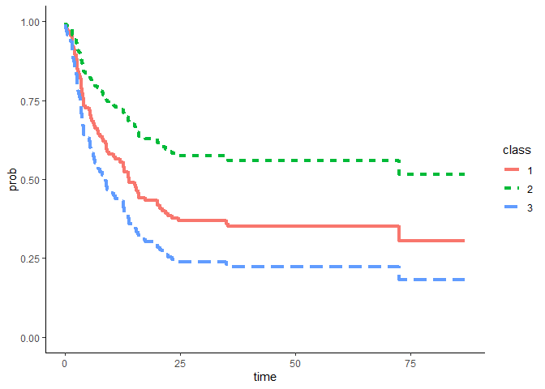
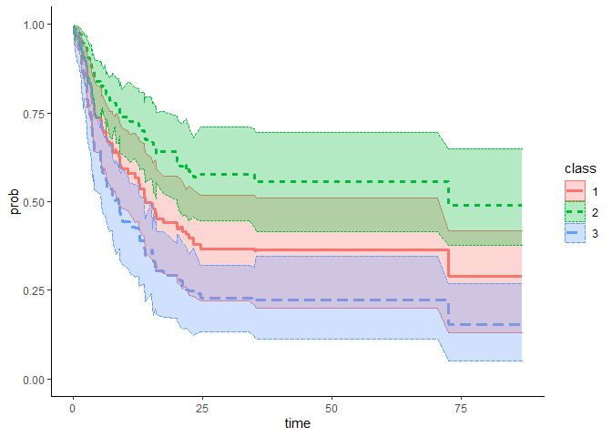
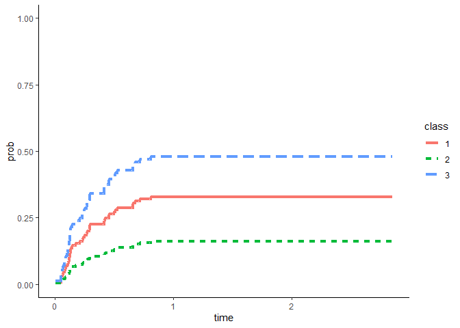
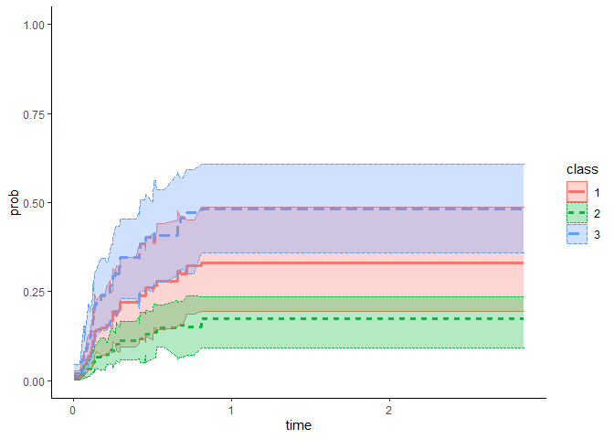

The goal of AdjKM.CIF is to create the covariate-adjusted Kaplan-Meier and cumulative incidence functions.
You could check the more specific introduction of the package at https://lesly1031.github.io/AdjKM.CIF/articles/package_intro.html
You can install the development version of AdjKM.CIF from GitHub with:
# install.packages("devtools")
devtools::install_github("Lesly1031/AdjKM.CIF",dependencies = TRUE)
data(bmt)
bmt$arm <- bmt$group
bmt$arm = factor(as.character(bmt$arm), levels = c("2", "1", "3"))
bmt$z3 = as.character(bmt$z3)
bmt$t2 = bmt$t2 * 12/365.25
result1 = adjusted_KM(data = bmt, time = "t2", status = "d3", group = "arm", covlist = c("z1",
"z3"), stratified_cox = "No", reference_group = NULL)
adjKM_plot(result1, data = bmt)
result1_1 = boot_ci_adj_km(boot_n = 100, ci_cut = c(0.025, 0.975), data = bmt, time = "t2",
status = "d3", group = "arm", covlist = c("z1", "z3"), stratified_cox = "No",
reference_group = NULL)
adjKM_CI_plot(result1_1, bmt)
data(bmt)
bmt$arm <- bmt$group
bmt$arm = factor(as.character(bmt$arm), levels = c("2", "1", "3"))
bmt$z3 = as.character(bmt$z3)
bmt$CenCI <- 0
for (ii in 1:137) {
if (bmt$d3[ii] == 0) {
bmt$CenCI[ii] = 0
} else {
if (bmt$d2[ii] == 1) {
bmt$CenCI[ii] <- 1
} else {
bmt$CenCI[ii] <- 2
}
}
}
bmt$t2 = bmt$t2 * 12/365.25
result1 = adjusted_CIF(data = bmt, time = "t2", status = "CenCI", group = "arm",
covlist = c("z1", "z3"), event_code = 1, stratified = "No", reference_group = NULL)
table_res1 = spread(result1, class, prob)
head(table_res1)
#> time 1 2 3
#> 1 0.03285421 0.007337385 0.003216491 0.01206072
#> 2 0.06570842 0.007337385 0.003216491 0.01206072
#> 3 0.32854209 0.007337385 0.003216491 0.01206072
#> 4 0.52566735 0.007337385 0.003216491 0.01206072
#> 5 1.05133470 0.007337385 0.003216491 0.01206072
#> 6 1.14989730 0.007337385 0.003216491 0.01206072Figure
adjCIF_plot(result1, data = bmt)
result1_boot = boot_ci_adj_cif(boot_n = 100, ci_cut = c(0.025, 0.975), data = bmt, time = "t2",
status = "CenCI", group = "arm", covlist = c("z1", "z3"), event_code = 1, "No",
NULL)Figure
adjCIF_CI_plot(result1_boot, bmt)